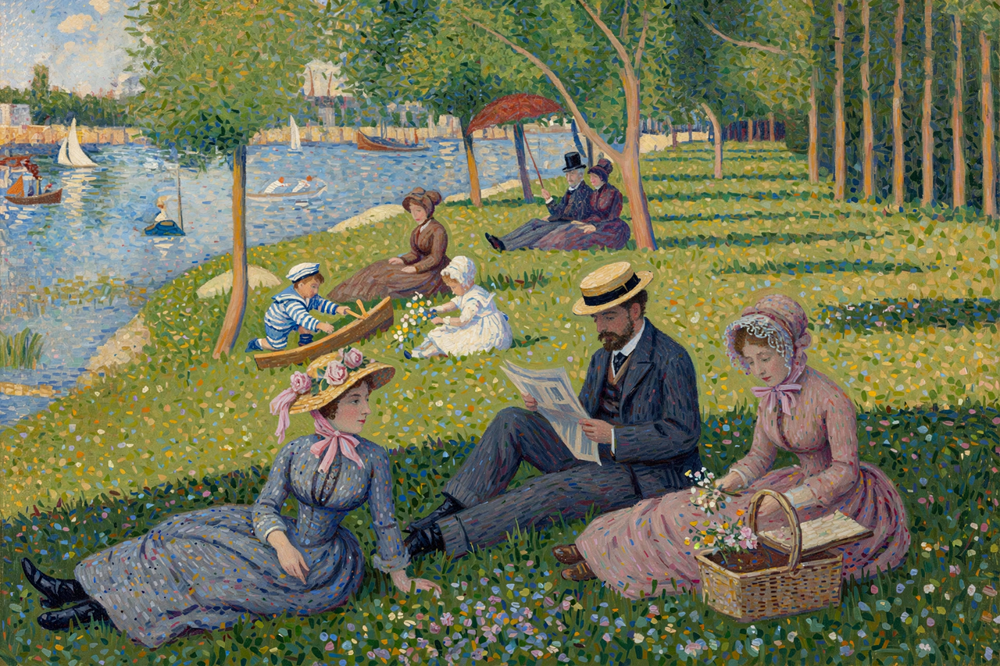

A Sunday Afternoon on the Island of La Grande Jatte
From Wikipedia, the free encyclopedia

A Sunday Afternoon on the Island of La Grande Jatte is a painting by the French artist Georges Seurat, created in 1884–86 (with later reworking). It depicts Parisians at leisure on an island in the Seine and is the masterpiece of Pointillism — the technique of applying distinct dots of pure colour intended to fuse in the viewer's eye. Exhibited at the final Impressionist exhibition in 1886 to fascination and mockery, it is now held by the Art Institute of Chicago and ranks among the most famous paintings of the nineteenth century.
Technique and composition
Seurat, 26 when he began, worked from dozens of oil sketches and drawings, applying the colour theory of Chevreul and Rood: juxtaposed complements vibrate, mixing optically rather than on the palette (he later added a painted border of dots). The frozen, frieze-like figures — some forty-eight people, boats, a monkey, dogs — span classes in rigid profile, an image of modern leisure both idyllic and estranged, each figure isolated in the crowd.
Reception and legacy
Critics coined 'pointillism' and 'neo-impressionism' around it; Seurat's early death (1891) left the movement to Paul Signac. The painting passed to Chicago in 1924 (Helen Birch Bartlett Memorial Collection). Its cultural afterlife includes Sondheim and Lapine's musical Sunday in the Park with George (1984), which imagines Seurat's inner life around the canvas, and a famous parody in the film Ferris Bueller's Day Off (1986).